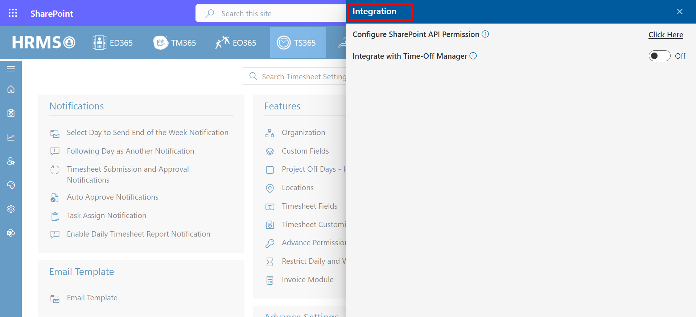
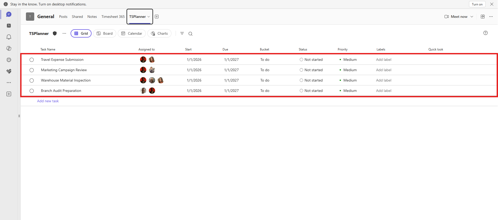
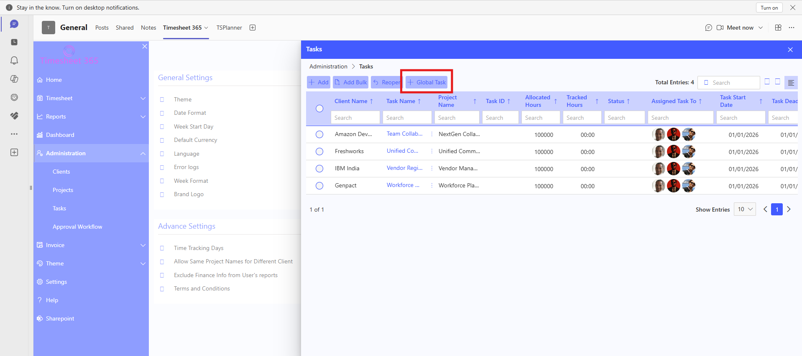
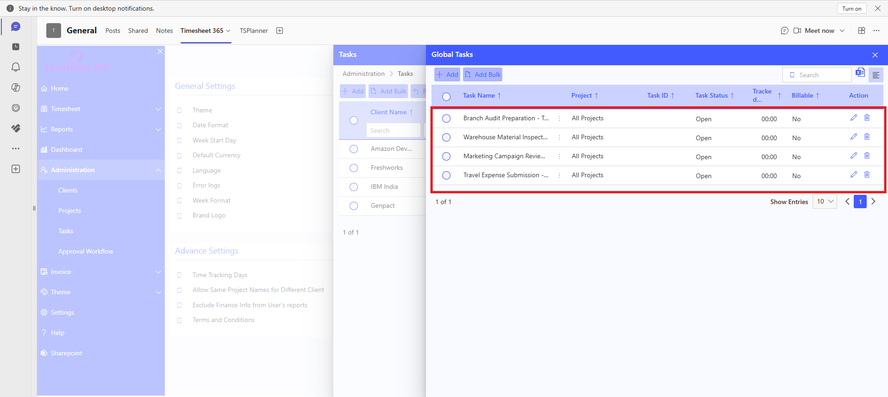
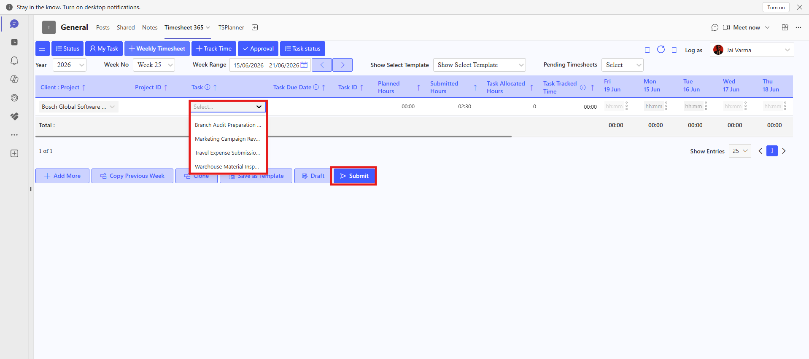

Intregration
From here you can Integrate Timesheet application with other application.

- • Enable MS Planner Integration.
- • Create tasks in Microsoft Planner.
- • Synchronize Planner tasks.
- • Planner tasks appear as Global Tasks.
- • Move Global Tasks to a project.
- • Use those tasks in Weekly Timesheet.
- • Submit timesheet against Planner-created tasks.
- • Automatic synchronization of Planner tasks.
- • Global Task management.
- • Bulk task movement.
- • Project-specific task mapping.
- • Planner-based timesheet tracking.
- • Centralized task management.
- • Eliminates duplicate task creation.
- • Improves productivity tracking.
- • Reduces administrative effort.
- • Enhances collaboration between Teams and Timesheet 365.
- • Simplifies task synchronization.
Integrate with Time-Off Manager
By enabling this toggle, you can integrate the "Time Off Manager" app, which should be installed on the same site.
Knowledge Base – MS Planner Integration Functionality
The MS Planner Integration functionality allows organizations to synchronize Microsoft Planner tasks into Timesheet 365. Planner-created tasks are imported as Global Tasks, which can later be moved to specific projects and used for timesheet submission
Overview
This functionality helps organizations eliminate duplicate task creation and maintain synchronization between Microsoft Planner and Timesheet 365.
Functionality Flow
Step 1 – Enable MS Planner Integration
Navigate to Settings → Integration and enable the 'Integrate With MS Planner' toggle.

Enable MS Planner Integration
Step 2 – Create Tasks in Microsoft Planner
Create tasks inside Microsoft Planner. These tasks will later be synchronized into Timesheet 365.

Tasks Created in Microsoft Planner
Step 3 – Synchronize Planner Tasks
Click the 'Sync' button inside the Integration section to synchronize Planner tasks into Timesheet 365.

Synchronize Planner Tasks
Step 4 – Open Global Tasks
Navigate to Administration → Tasks and click on the 'Global Task' button.

Open Global Tasks
Step 5 – View Synced Planner Tasks
All synchronized Planner tasks are displayed inside the Global Tasks section.

View Synced Global Tasks
Step 6 – Bulk Move Tasks
Select the required global tasks and click the 'Bulk Move' option.

Bulk Move Global Tasks
Step 7 – Move Tasks to Specific Project
Inside the Move Task window, select the Client, Project, Task Start Date, and Billable settings. Then click 'Move'.

Move Tasks to Project
Step 8 – Use Planner Tasks in Weekly Timesheet
Navigate to Timesheet → Weekly Timesheet and select the required Client and Project. Planner-created tasks are available in the Task dropdown.

Planner Tasks Available in Weekly Timesheet
Step 9 – Submit Timesheet
Select the task, Enter the required hours and click Submit.

Timesheet Submitted Successfully
Key Features
Benefits
Important Conditions
| Condition | Requirement |
| MS Planner Integration Enabled | Requirement |
| Planner Access Permissions | Requirement |
| Tasks Synchronized | Requirement |
| Tasks Moved to Project | Requirement |
| User Has Project Access | Requirement |
Summary
The MS Planner Integration functionality enables organizations to synchronize Planner tasks into Timesheet 365, convert them into project-specific tasks, and track user effort directly against Microsoft Planner-created tasks.